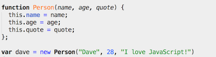
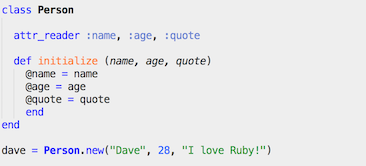

JavaScript vs. Ruby
March 28th, 2014
With Unit 1/Week 3 of bootcamp prepation behind me, I wanted to take a moment to reflect on some impressions left after coding through JavaScript and Ruby.
Quick Impressions
Methods and Functions
Constructor Function versus Class
Summary
JavaScript and Ruby both support object-oriented, and have a relatively easier to learn syntax compared to other programming languages. Comparing syntax, would say that JavaScript is definitely influenced by C programming, while Ruby is less cryptic and easier to read/interpet even if you don't know a programming language. So far, I have seen JavaScript commonly applied in client-side (web browser) situations, while Ruby seems to be a more general-purpose language.
In JavaScript, it's common to define functions. In Ruby, it's common to define methods. For a simple "hello world" program, the syntax is pretty straight forward for either case.
JavaScript

Ruby
JavaScript and Ruby can both be object-oriented, or in other words methods and functions of a similar kind can be created and defined as such. For example, there could be a object called "Person" which acts like a blueprint (also called prototype in JS), to be used for more specific people like "Dave" or "Jane". In the code , the blueprints are represented as either constructor functions (JavaScript) or a Class (Ruby), and the specific people can be represented as specific 'instances' or 'objects' of the blueprint.
This makes much more sense when comparing the code below. Both snippets of code are creating a Person with the attributes of name, age, and quote. After the blueprint is created, a specific instance called dave with unique attributes is being created. Syntax is slightly different, but both languages are very powerful from the magic of object oriented programming
JavaScript
Ruby
Reflecting on the last 2 weeks being focused on Ruby and JavaScript, with all the similarities in mind, I do still have to be honest to say that I am partial towards Ruby. I started both languages at the same time. Where I have had trouble recalling half of the JavaScript concepts due to syntax, Ruby is just easier to recall how to do the same things - probably because it's a very readable syntax for the common english-speaking citizen. Also, I have repeatedly been impressed with Ruby's zen-like elegance of being able to do more with less code, whether it be for setting up loops, conditionals, or processing arrays and hashes. Also a big plus that Ruby was invented by a Japanese guy named matz, which makes me want to support it more.